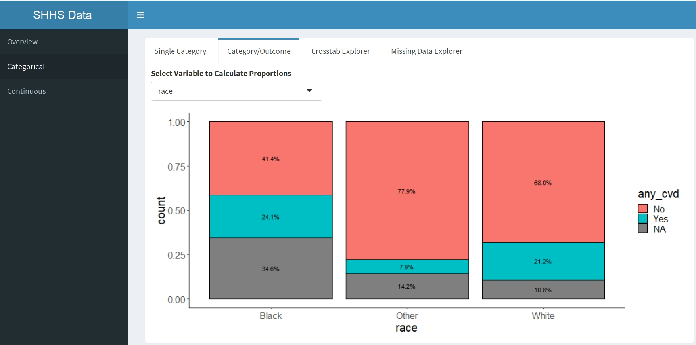

Well, we just finished our clinical data wrangling workshop. This was a 12 hour workshop (spread over 4 days) where students got to work with a real research dataset (the Sleep Heart Health Study data). This is a workshop that we developed as part of an National Library of Medicine T15 training supplement in Data Science. The following is a short report describing the workshop and its outcomes.
Intended Audience
We designed the workshop for our incoming informatics students (both clinical and biological majors) in order to introduce them to the difficulties of working with clinical data.
Learning Objectives
These were our learning objectives for the workshop:
- Understand the biology of sleep and sleep apnea and how the biology informs the covariates measured in the Sleep Heart Health Study
- Understand why clinical data is useful and also why it’s difficult to work with
- Learn Exploratory Data Analysis techniques and use them to inform model building.
- Learn to assess logistic regression models using simple diagnostics.
The Dataset
We used the Sleep Heart Health Study dataset from the National Sleep Research Resource. This is a dataset of approximately 5800 patients that have over 3000 covariates. We limited our students to a smaller number of covariates (17), including our outcome of interest, cardiovascular disease.
Workshop Format
We designed the workshop to be a mix of didactic lectures and active learning exercises. Where possible, we had students work in groups to answer questions about the data. These activities included a data scavenger hunt using our EDA exploration app, and a logistic modeling exercise.
Day 1 Outline
- Introduction, logistics, and groups assigned (30 minutes)
- Biology of Sleep and Cardiovascular Disease (40 minutes, format: in-person lecture)
- Break Time (15 minutes)
- The Value of Clinical Data (15 minutes, in-person lecture)
- Clinical Data Quality (40 minutes, in-person lecture)
- Lunch (90 minutes, with optional R setup session)
- Exploring the SHHS Dataset (60 minutes, format: Data Scavenger Hunt w/ Shiny App, each team gets a task and has to show the class how to find the information)
- Applying the Clinical Wrangling Process: Diabetes (45 minutes, format: in-person lecture)
- Logistic Regression Model Basics (60 minutes, format: walkthrough of R Notebook)
Day 2
- Question/Answer session about Logistic Regression and Modeling (50 minutes)
- Assignment about
racevariable (assigned to groups, take-home assignment)
Day 3
- Discussion about
raceas a covariate, sharing of findings - Overview of hypertension and how it relates to cardiovascular disease and sleep apnea
- Template/R Notebook given for final presentation in groups (in-class lab time, template is structured as a series of decisions.)
Day 4
- Group presentations about covariate decisions and resulting model (1 hour, present final version of R notebook). At each decision stage, teams must decide on whether or not to include covariates or not given what they have found from exploring the data and justify their decision using EDA visualizations.
Lessons Learned
Overall, we believe the workshop went well, as it encouraged discussion about data and its appropriateness among the students. Students were engaged overall and asked lots of questions.
The final reports for each group were generated from a R Notebook. All three groups showed a thoughtful narrative and justification for each of the covariates included in the model.
Interactive visualization removes barriers to understanding issues in data. Ted developed a Shiny App that allowed the students to visually browse and understand the data. Along with the EDA scavenger hunt (see below), this served as a good introduction for students to get their feet wet with the SHHS dataset.
Our diverse backgrounds helped make the workshop accessible. Nicole Weiskopf has a background in data quality of clinical data, Eilis Boudreau does sleep study work, and I’m a bit of a mongrel.
Securing the cooperation of the data holders made the workshop possible. The dataset comes from the National Sleep Study Resource. Eilis knows Susan Redline, who heads that group and pitched the idea (over two sessions) to her group. Susan’s group was very enthusiastic and helpful, especially in helping the students get their data use agreements in so they could access the dataset.
Group work is learning work. We assigned each student to a group, and gave each group questions to answer and teach the class about the dataset. By pointing them to specific aspects of the data, we opened the door to discussion.
EDA scavenger hunt. We had the students learn data exploration by giving them a scavenger hunt to look at the relationship between variables. Each group was then required to talk about their findings and which visualization helped them discover that relationship. For example, there is a relationship between age and race in our dataset; the “Other” category of race has a lower median age than the other two categories, “White” and “Black”.
Didactic Teaching is also important. Nicole and Eilis covered both the biology of sleep apnea and the difficulty of understanding the implications of clinical data. Without this background, students would not be able to make informed decisions about their final model.
Guide the Students, but don’t force discussion. This was important. We think the students need to connect the dots to really understand the issues. The final product (a logistic regression model predicting cardiovascular disease with an R Notebook) had steps and choices. But the choices for each group of students was different.
A Code of conduct is necessary and important. We are big believers in psychological safety. If people don’t feel safe in the classroom environment (and let’s face it, grad school classrooms rarely are), they will be less likely to learn and contribute.
Data restrictions made deploying difficult. The activity materials were deployed as an RStudio project. However, we couldn’t share the data within a GitHub repo. As OHSU’s approved vendor is Box, we setup a box folder containing the material to be shared with students.
We were grateful for the incoming informatics students’ enthusiasm and patience as we got this workshop going. Also thanks to the NLM T15 Supplement in Data Science, without which we would not have gotten the opportunity to conceptualize, put together, and deliver this workshop. Thanks again to Susan Redline and the National Sleep Research Resource group, especially Dan Mobley who helped us with the last-minute data use agreements.
Link to Workshop: https://github.com/laderast/clinical_data_wrangling
Citation
BibTeX citation:
@online{laderas2018,
author = {Ted Laderas and Eilis Boudreau, Ted Laderas, and Nicole
Weiskopf},
title = {Things We Learned Teaching Clinical Data Wrangling},
date = {2018-10-15},
url = {https://laderast.github.io//posts/2018-10-15-clinical-data-wrangling},
langid = {en}
}
For attribution, please cite this work as:
Ted Laderas, and Eilis Boudreau, Ted Laderas, and Nicole Weiskopf. 2018.
“Things We Learned Teaching Clinical Data Wrangling.”
October 15, 2018. https://laderast.github.io//posts/2018-10-15-clinical-data-wrangling.